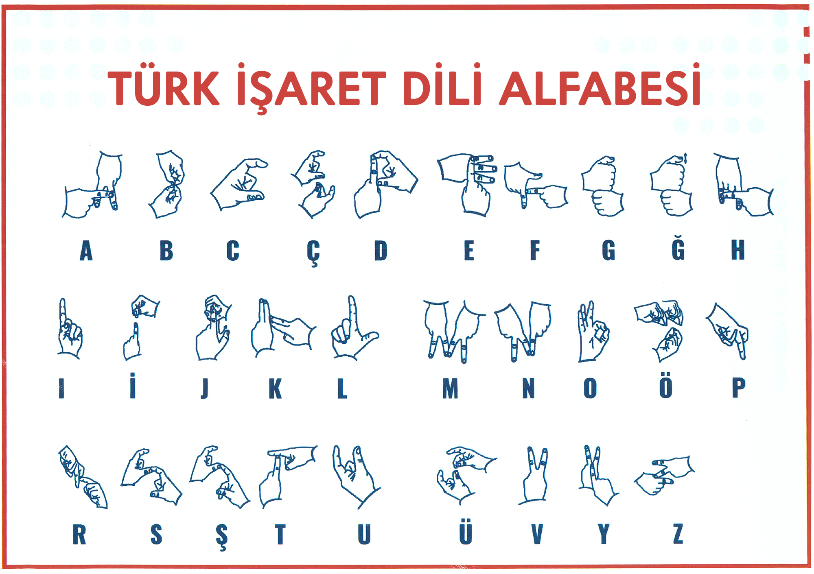

Ders 1: Alfabe ve Parmakla Hesaplama
Ders Videosu / Görseli
Açıklamalar
Türk İşaret Dili (TİD) öğrenirken temel yapı taşlarından biri parmak alfabesidir. Parmak alfabesi, özellikle özel isimleri (kişi, şehir isimleri vb.), işaretini bilmediğiniz kelimeleri veya teknik terimleri heceleyerek ifade etmek için kullanılır.
Bu bölümde, TİD'de kullanılan 29 harfin her birinin el şeklini öğreneceksiniz. Hareketleri net ve anlaşılır bir şekilde yapmaya özen gösterin. Ayna karşısında pratik yapmak, kendi el şekillerinizi görmenize yardımcı olabilir.
Parmakla Hesaplama (Sayılar)
Alfabenin yanı sıra, 0'dan 10'a kadar (ve ilerleyen derslerde daha fazlasını) sayıları parmaklarınızla nasıl göstereceğinizi de öğreneceksiniz. Sayılar günlük hayatta sıklıkla kullanılır (yaş, saat, miktar belirtme vb.).
İpuçları:
- Harfleri hecelerken harfler arasında kısa bir duraklama yapın.
- El şekillerini yaparken elinizi sabit tutmaya çalışın, çok fazla sallamayın.
- Sayıları gösterirken avuç içinizin genellikle size mi yoksa karşı tarafa mı dönük olduğuna dikkat edin (işaretten işarete değişebilir).
- Anlamadığınız bir işaret gördüğünüzde, karşı taraftan parmak alfabesiyle hecelemesini rica edebilirsiniz.
Alıştırmalar
Heceleme Pratiği: Aşağıdaki kelimeleri parmak alfabesiyle hecelemeyi deneyin:
- ANNE
- BABA
- EV
- OKUL
- MERHABA
- TÜRKİYE
- [KENDİ ADINIZ]
Sayı Pratiği: Aşağıdaki sayıları parmaklarınızla göstermeyi deneyin:
- 3
- 7
- 10
- 5
- 0
- 8
(İleride buraya etkileşimli alıştırmalar eklenebilir.)